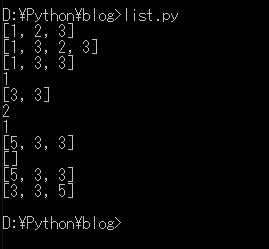
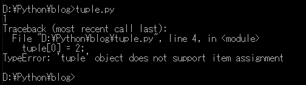
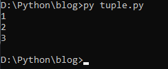
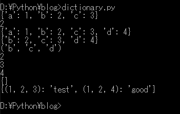
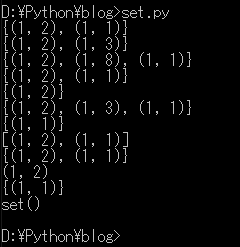
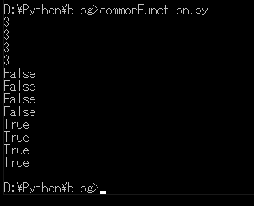

[Python] 03. Pythonでリスト(list)とタプル(tuple)、そしてディクショナリ(dictionary)、セット(set)
こんにちは。明月です。
この投稿はPythonでリスト(list)とタプル(tuple)、そしてディクショナリ(dictionary)、セット(set)に関する説明です。
一般のプログラム言語の流れだと変数宣言とデータタイプを確認すると次は制御文を確認します。
でも、Pythonの場合はリスト系のデータ集合から確認します。
リストとタプルはデータが集まっている配列タイプでリストは追加、削除が可能、タプルは不可能なタイプです。その中でディクショナリはリストでキーがあるデータセットです。
セットはリストと似ていますが、数学の集合計算の和集合、積集合を計算するようなデータタイプです。
Pythonには同じリストタイプでも種類がもっと精密に分けています。
リスト(list)
リストは他のプログラム言語と同じく、push(append)とputが存在するリスト構造のアルゴリズムです。リストはPythonで大括弧([])で宣言します。
# リスト宣言
list = [];
# リストに値を格納
list.append(1);
list.append(2);
list.append(3);
# リスト出力 結果= [1,2,3]
print(list);
# リストの中に値を格納
list.insert(1, 3)
# リスト出力 結果= [1,3,2,3]
print(list);
# リストの中を削除
del list[2]
# リスト出力 結果= [1,3,3]
print(list);
# リストの一番前をreturnしてリストから削除する。
ret = list.pop(0);
# 結果= 1
print(ret);
# リスト出力 結果= [3,3]
print(list);
# リストに5を格納
list.append(5);
# リストの中で3の個数、 結果= 2
print(list.count(3));
# リストの中で5の個数、 結果= 1
print(list.count(5));
# リスト配列をリバース
list.reverse();
# リスト出力 結果= [5,3,3]
print(list);
# リストをコピー
clone_list = list.copy();
# リストをすべて削除
list.clear();
# リスト出力 結果= []
print(list);
# コピーしたリスト出力 結果= [5,3,3]
print(clone_list);
# リストをコピー
list = clone_list.copy();
# 昇順ソート
list.sort();
# リスト出力 結果= [3,3,5]
print(list)

リストには格納、挿入、削除機能もありますが、ソート、コピー機能もあるのでデータ集合管理がしやすいです。
タプル(tuple)
タプルは上のリスト機能で宣言だけできるし、挿入、格納、削除ができないし、ソート、コピーもできないです。
タプルはPythonで小括弧(())で宣言します。
tuple = (1,2,3);
# 出力 結果= 1
print(tuple[0]);
# タブルの0番のデータを2に修正
tuple[0] = 2;

タプルの0番のデータを修正しようとすればエラーが発生します。
タプルは関数の結果、キーなどで使うタイプです。
なのでタプルになっているデータを一つの変数に変換ができますが、それをPythonではタプルアンパッキングといいます。
## タブル宣言
tuple = (1,2,3);
# タプルアンパッキング
# 各 a,b,cの変数に格納する。
a, b, c = tuple;
# 結果出力
print(a);
print(b);
print(c);

タプルアンパッキングはコンマ(,)の区切りでやりますが、タプルの個数は一致しないとエラーが発生します。
ディクショナリ(dictionary)
PythonのディクショナリはJavascriptのJsonの構造と同じです。ディクショナリはPythonで中括弧({})で宣言します。
# ディクショナリ生成(キー:値)
dic = {'a':1,'b':2,'c':3}
# ディクショナリ 出力= {'a':1,'b':2,'c':3}
print(dic);
# ディクショナリのキーをbにある値を出力= 2
print(dic['b']);
# ディクショナリのキーと値を追加(もし、キーが存在すれば値を修正)
dic['d'] = 4;
# ディクショナリ 出力= {'a':1,'b':2,'c':3,'d':4}
print(dic);
# ディクショナリのキーを削除
del dic['a'];
# ディクショナリ 出力= {'b':2,'c':3,'d':4}
print(dic);
# ディクショナリのキーをタプルに変換
keys = tuple(dic.keys());
# ディクショナリのキーを出力= ('b', 'c', 'd')
print(keys);
# タプルのループでディクショナリの値を出力
for key in keys:
print(dic[key]);
# ディクショナリの初期化
dic.clear();
# ディクショナリ 出力= {}
print(dic);
# タプルをキーにして生成が可能
dic = {(1,2,3):"test",(1,2,4):"good"};
# ディクショナリ 出力= {(1, 2, 3): 'test', (1, 2, 4): 'good'}
print(dic);

セット(set)
setは集合計算専用のデータタイプです。つまり、数学の特性をもっているデータタイプです。セットはPythonで中括弧({})で宣言します。
ここで区分することはディクショナリも中括弧({})で宣言します。差異はディクショナリはキーがあるしセットはキーがないことです。
# セットでデータ二つを宣言する。ここではタプルデータの二つを格納した。
set1 = {(1,1),(1,2)};
set2 = {(1,2),(1,3)};
# セット出力= {(1, 2), (1, 1)}
print(set1);
# セット出力= {(1, 2), (1, 3)}
print(set2);
# セットに値を追加
set1.add((1,8));
# セット出力= {(1, 2), (1, 8), (1, 1)}
print(set1);
# セットに値を削除. set1.delete((1,8))の関数は同じ処理だが、delete関数の場合は値がなければエラー発生、discardはエラーを発生しない。
set1.discard((1,8));
# セット出力= {(1, 2), (1, 1)}
print(set1);
# 積集合
ret = set1 & set2;
# セット出力= {(1, 1)}
print(ret);
# 和集合
ret = set1 | set2;
# セット出力= {(1, 2), (1, 3), (1, 1)}
print(ret);
# 差集合
ret = set1 - set2;
# セット出力= {(1, 1)}
print(ret);
# セットをリストに変換する。
list = list(set1);
# リスト出力= [(1, 2), (1, 1)]
print(list);
# リストをセットに変換する。
set3 = set(list);
# セット出力= {(1, 2), (1, 1)}
print(set3);
# セットの始めの値を取り除いて出力する。 出力 = (1,1)
print(set1.pop());
# セット出力= (1, 2)
print(set1);
# 셋을 초기화 한다.
set1.clear();
# セット出力
print(set1);

セットとリストの差はリストはユーザーが格納順番でデータがありますが、セットは順番がありません。格納したことが初めにある可能性もあるし、最後にある可能ですもあります。
集合のために特化になったからだと思います。
リスト系のデータタイプの共通関数
リストとディクショナリ、タプル、セットが共通で使える関数があります。
# リスト
list = [1,2,3];
# タプル
tuple = ('a','b','c');
# ディクショナリ
dic = {'a':1,'b':2,'c':3};
# セット
set = {'A','B','C'}
# データ長さを計算する関数
print(len(list));
print(len(tuple));
print(len(dic));
print(len(set));
# データが有るかを確認する関数
print(5 in list);
print('e' in tuple);
print('e' in dic);
print('E' in set);
# データが無いかを確認する関数
print(5 not in list);
print('e' not in tuple);
print('e' not in dic);
print('E' not in set);

ここまでPythonでリスト(list)とタプル(tuple)、そしてディクショナリ(dictionary)、セット(set)に関する説明でした。
ご不明なところや間違いところがあればコメントしてください。
- [Python] 15. クラスを継承する方法2020/06/15 18:20:07
- [Python] 14. クラスプロパティ(Property)2020/06/12 17:45:13
- [Python] 13. クラス関数(class method)とダック・タイピング、そして特殊メソッド2020/06/11 19:42:29
- [Python] 12. クラス(Class)を使う方法2020/06/10 19:33:33
- [Python] 11. デコレーター（Decorator）を使う方法2020/06/09 17:27:18
- [Python] 10. モジュールとパッケージ(import)2020/06/08 19:07:50
- [Python] 09. 例外処理する方法2020/06/05 17:11:47
- [Python] 08. ジェネレータ(Generator)2020/06/04 18:46:08
- [Python] 07. globalとnonlocal2020/06/03 20:34:49
- [Python] 06. 関数(function) - インライン関数、callbak、ラムダ(lambda)そしてクロージャ2020/06/02 20:51:22
- [Python] 05. コンプリヘンション(Comprehension)を使用する方法2020/06/01 19:38:58
- [Python] 04. 制御文(if, while, for, break, continue)とインデント2020/05/29 21:09:08
- [Python] 03. Pythonでリスト(list)とタプル(tuple)、そしてディクショナリ(dictionary)、セット(set)2020/05/27 18:49:08
- [Python] 02. データタイプ、変数宣言そしてコメントする方法2020/05/26 18:16:52
- [Python] 01. Python3をインストールする方法(Anacondaインストール)2020/05/25 19:02:44
- [Design pattern] 2-6. プロキシパターン(Proxy pattern)2021/11/01 19:42:44
- [Design pattern] 2-5. フライウェイトパターン(Flyweight pattern)2021/10/29 19:48:27
- [C#] 59. ウィンドウフォーム(Window form)にコントロール(Control)を使い方法2021/10/29 19:45:43
- [Design pattern] 2-4. デコレーターパターン(Decorator pattern)2021/10/28 20:11:13
- [C#] 58. ウィンドウフォーム(Window form)を作成する方法、そしてウィンドウメッセージとキュー2021/10/27 20:35:44
- [Design pattern] 2-3. ブリッジパターン(Bridge pattern)2021/10/27 20:32:21
- [Design pattern] 2-2. コンポジットパターン(Composite pattern)2021/10/27 20:30:54
- [Design pattern] 2-1. アダプターパターン(Adapter pattern)2021/10/26 19:12:40
- [Project design] プログラム最終テスト - ST(System test(Standard, Scenario))2021/10/26 19:10:07
- [Project design] プログラム結合テスト - IT(Integration test)2021/10/25 20:12:17
- [Python] Seleniumライブラリを使う方法(自動ウェブテスト、ウェブスクレイピング)2021/10/25 19:29:00
- [Design pattern] 1-5. プロトタイプパターン(Prototype pattern)2021/10/22 19:35:45
- [Project design] プログラム検証とテスト - Unitテスト2021/10/22 19:34:09
- [C#] 57. コーティング規約2021/10/21 18:57:02
- [C#] 56. 値の初期化及び基本データ値(default)を設定する方法、そして原始データのnull処理、?と??の使い方2021/10/21 18:54:41